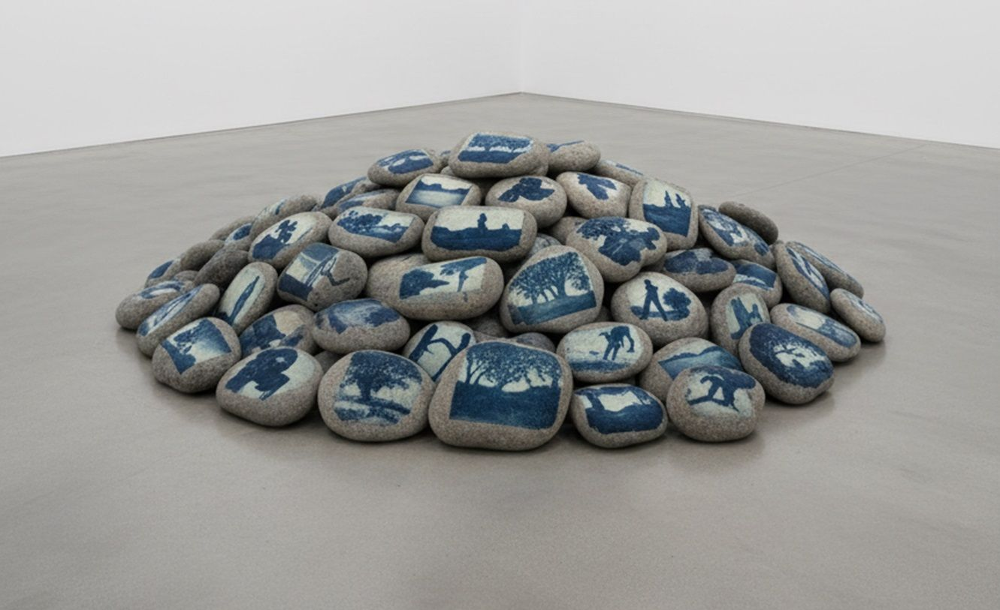
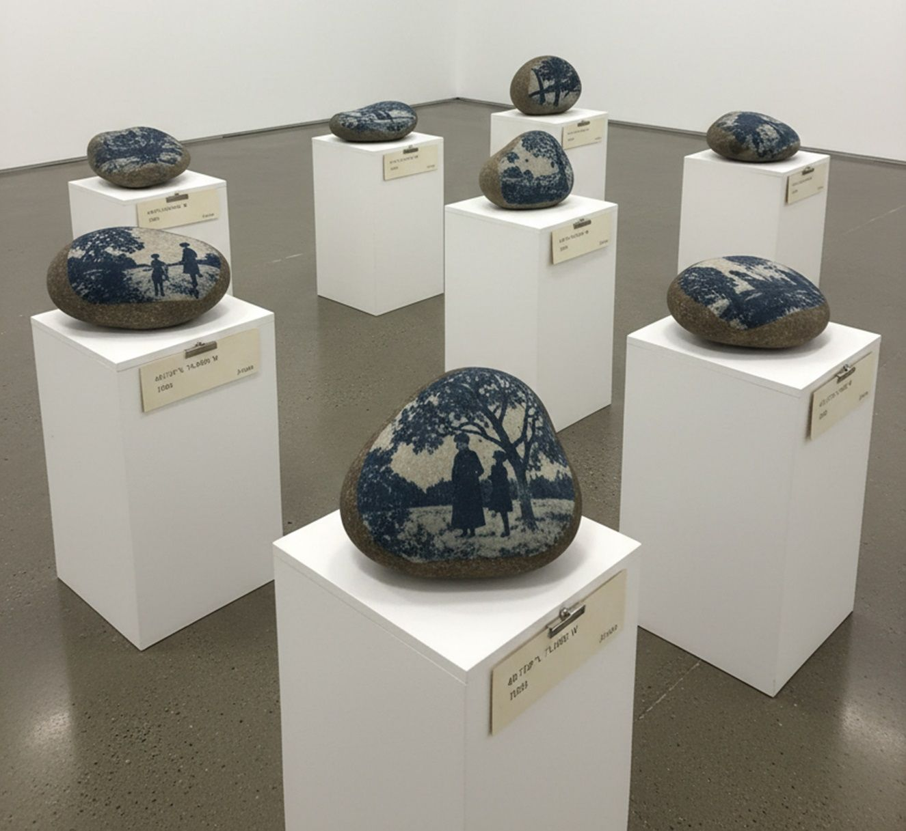

Geological Seconds, 2026



Цифровая визуализация проекта (слева); материальная проба, цианотипия на камне (справа).
Geological Seconds — инсталляция о несоразмерности человеческого и геологического времени: мгновение, за которое делается снимок, оказывается нанесено цианотипией на камень, существующий тысячелетиями. В одном зале работа сталкивает два регистра. Сотни мимолётных, почти мусорных кадров, которые сегодня снимают десятками в день и почти никогда не пересматривают, напечатаны на камнях и свалены грудой, как порода; редкие архивные снимки — на отдельных камнях на постаментах, как музейные экспонаты. Это смещает привычное ощущение того, какой момент чего стоит. Работа не отвечает, что в итоге сохраняет время — человеческий образ или саму материю, — а оставляет этот вопрос зрителю. Для конкретной площадки состав дорабатывается сайт-специфично: с архивом, связанным с самим местом, и камнями, собранными там же.
Подробнее
Geological Seconds — инсталляция о несоразмерности двух режимов времени: человеческого, измеряемого долями секунды, и геологического, исчисляемого тысячелетиями. Фотографии переносятся цианотипией прямо на камни: мгновение, за которое делается снимок, оказывается нанесено на материю, которая существовала задолго до кадра.
В одном пространстве работа сталкивает два регистра обращения с изображением. Сотни мимолётных, почти мусорных кадров, которые сегодня снимают десятками в день и почти никогда не пересматривают, напечатаны на камнях и свалены грудой, как порода, — поток изображений, обретший вес и неустранимость. Редкие архивные снимки — на отдельных камнях на постаментах, с музейными табличками, как ценные экспонаты. Один и тот же жест переноса на камень придаёт противоположный статус: расходное становится тяжёлым и постоянным, единичное — музейным. Работа смещает привычное ощущение того, какой момент чего стоит.
В сайт-специфичной реализации этот вопрос привязывается к конкретному месту: архивные снимки берутся из истории самой площадки, а камни собираются там же. Человеческая история места оказывается тонким недавним слоем на породе, которая старше её на тысячелетия.
Цианотипия светочувствительна и со временем выцветает — образ на камне недолговечнее самого камня. Но работа не превращает это в ответ: сам жест переноса и постамент — это усилие сохранить, признание, что момент чего-то стоил. Что перевесит — тленность образа или упрямство его удержать, человеческий взгляд или безразличная материя, — Geological Seconds не решает, а удерживает как вопрос, оставляя зрителя внутри этой несоразмерности.